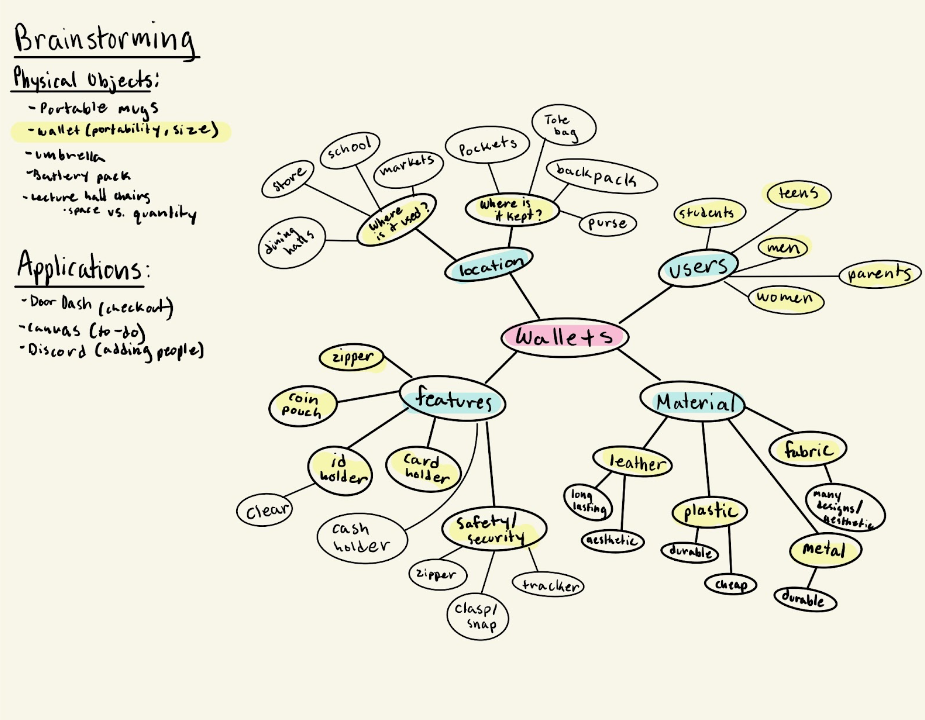

Wallet ReDesign
Project Overview
This project was the final for DSGN 1. Where we had to redesign an object or application in a way that more user friendly.
Problem
There were a few problems that students faced with the app such as there is a lot of scrolling and it is very busy, that it takes for a while for the user to pinpoint where the information they are lookign for is at, or studnets to have not even heard about it>
Research
For the research my team and I worked on getting feedback from users who own and use a wallet. For our interview process, we first created a shared google form in which we put all of our interview questions. This way, we would be able to fill out the form ourselves and type down the interviewees’ responses to each question as they answered. The google form would also allow us to easily view all the responses in a spreadsheet. The demographics of our interviews would mostly be college students, friends, roommates, and classmates. Most of our interviews were conducted on campus and on the spot since most people carry their wallet wherever they go. For our interview method, we used the master-apprentice model. The master-apprentice model allowed our interviewees to feel more comfortable and free when answering our questions. We would ask our interviewees the questions or have them perform certain tasks and we would observe as they explained and responded.
Design
[Describe the design process you used to develop your solution, including any wireframes, prototypes, or other design artifacts you created.]

Results
From our interviews we realized that there are many, many different variations of wallets, as no two interviewees had the same wallet. Also, all 19 of the interviewees rated their wallets 5 or above out of 10 when asked to rate their wallet’s overall design, 1 being the worst and 10 being the best. This shows that most people are content with their wallet even if there are a few features that they do not like about their wallet. With this in mind we tried not to make the redesign a complete overhaul of current available wallets, but just a slight variation. The main problems we tried to solve with our redesign include: not affording to fit in pocket, memory-lapse slip leading to losing wallet, capture slips that may occur due to clutter, not affording to easily show identification card. For our redesign, we decided to focus on an accordion style wallet as it is able to provide an adequate amount of room without being too bulky on the outside. We wanted to give our user lots of space to put all their items, while staying organized, and without the wallet being too bulky so it can still afford to fit into clothing pockets if needed. Our wallet is small enough to fit into clothing pockets due to its small size, but as a tradeoff it cannot hold as many items as a larger wallet can, such as a clutch wallet. The accordion style is also able to provide users with easy access to their cards, while keeping them organized. With more partitions in the wallet, there is less of a chance for it to get cluttered. This can help eliminate capture slips that may occur when pulling out certain cards. To help prevent memory-lapse slips that lead to the user losing their wallet, our redesign includes a small lanyard loop that affords for the wallet to be attached to other items. To help increase the security of our redesigned wallet, we utilized a magnetic snap button as the opening mechanism. The button provides both physical and auditory feedback, signifying to the user when it is opened and when it is closed correctly. Our redesign includes additional card slots outside of the accordion flaps so it can afford to hold a larger amount of cards. Each of the card slots have a slight divot on them so it affords pulling out the cards easier. For even more storage, we included a small pull-out coin pouch on the outside of the wallet that opens via a zipper. There are also 2 dedicated slots for identification cards that have a clear cover on them that affords for the card in those slots to be easily seen without having to physically take them out. In addition to cards, there is also a small pocket in the corner that affords to hold folded up cash if needed. There are many different slots and pockets to help the user keep their stuff organized, but as a tradeoff it makes the wallet larger and bulkier. While we want to provide the user with a wallet that can hold many items without being too bulky, physical constraints of the wallet’s size prevents the addition of more storage space without adding to its size, so we worked to have our redesign be a balance between those two factors.
Reflection
Wallets are an everyday item that most people have. There are many different variations of wallets available for each person’s preferences and needs, but there are still some prevalent issues that make using the wallet difficult. From our research, we found four main problems: too bulky, not enough organizing space, can be easily lost, and lack of easy access to important cards. We discovered a few other problems, but those were the four that we decided to focus on in our redesign. Our redesign features an accordion card holder slots, coin pouch, two ID card slots, lanyard loop, cash slot, and magnetic button clasp. We added each feature with the four main problems in mind. It was very difficult to design a wallet without it feeling too much like an already existing design. With the wallet being an item that most people use on a daily basis, it was also important to note that while current wallets have their faults, their design is what people are accustomed to using. So we tried to redesign the wallet in a way that would not stray too far from current existing wallets, but would still help solve the issues that currently existing wallet designs have.